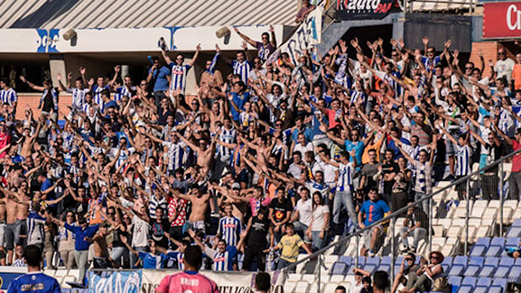

R.C. Recreativo de Huelva
R.C. Recreativo de HuelvaEl Decano del Fútbol Español
Abonados
Los señores abonados tendrán derecho al acceso a las localidades expresadas en los carnets, en todos los partidos de la LIGA ADELANTE en su fase regular de temporada 2014-15.
Son declarados fuera de abono, los partidos correspondientes a las eliminatorias de ascenso a LIGA BBVA y los partidos correspondientes al Campeonato de la Copa S. M. El Rey si bien los abonados pagarán un precio menor que el oficial de taquilla, así como los partidos ajenos a la competición oficial y Trofeo Colombino.
RENOVACIÓN DE ABONOS
Las renovaciones de asientos se iniciarán el próximo día 30 de junio hasta el día 8 de Agosto 2014. Pasada esta fecha el Real Club Recreativo de Huelva. SAD, dispondrá libremente de las localidades que no hayan sido renovadas, aunque los abonados podrán seguir renovando sus carnets en localidades que estén libres.
Esta SAD permitirá a los abonados realizar un cambio sin coste adicional. A partir del segundo cambio, este importaría una cantidad de 6 € al solicitante.
Para los nuevos abonados el plazo quedara abierto también desde el 30 de junio hasta el 12 de septiembre de 2014 en las localidades no ocupadas.